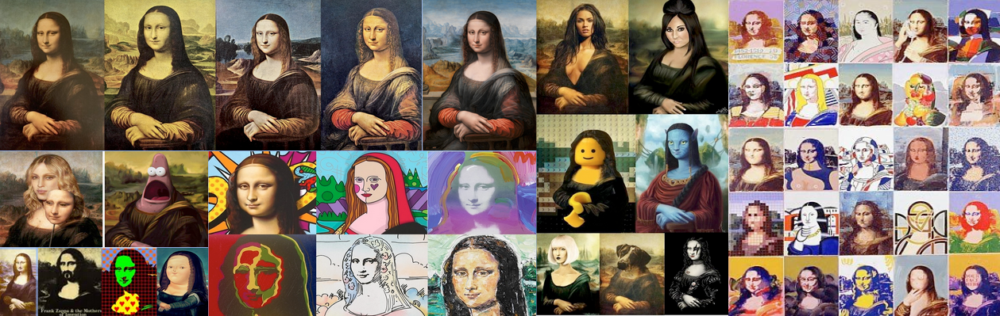
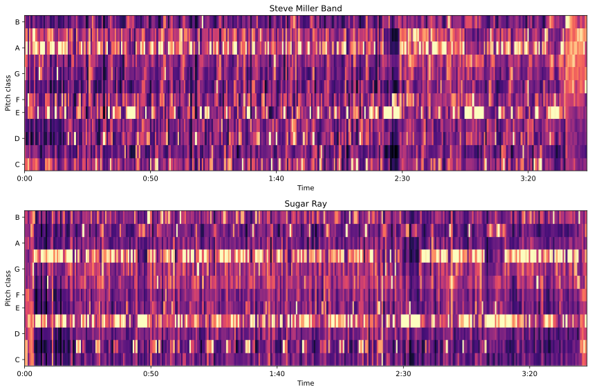
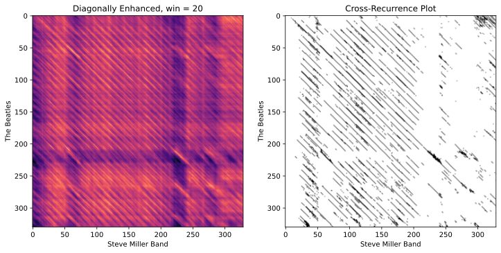
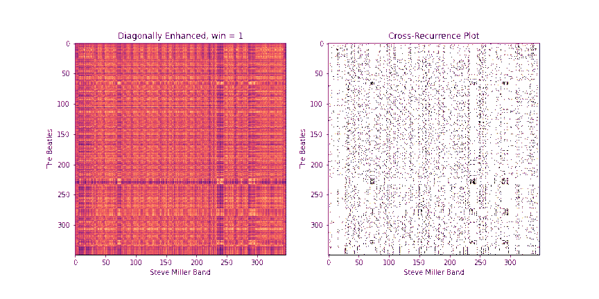
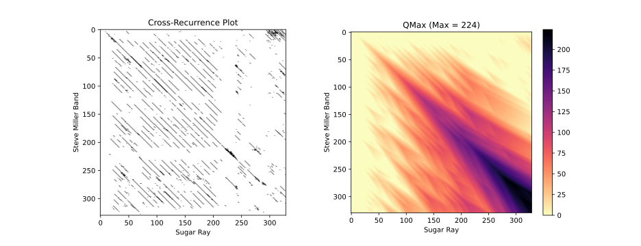
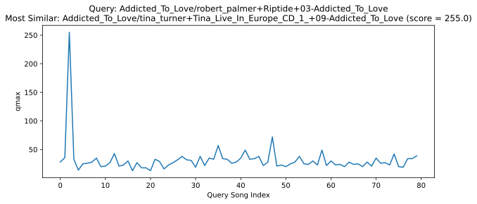
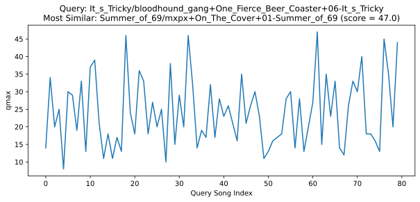

Assignment 5: Audio Version Identification (35 Points)
Chris Tralie
Due Thursday 4/29/2021
Overview / Logistics
Picture courtesy of Joan Serrà and Furkan Yesiler
Background
Audio version identification is a challenging problem compared to audio fingerprinting (the "Shazam algorithm"). Unlike the exact recordings that audio fingerprinting addresses, versions can undergo many transformations. For some examples, refer to this page (cataloged by Rachel Bittner from Spotify), as well as some examples I put together here. In fact, it's not even clear where to draw the line on what constitutes a version, and research in this area is ongoing. For more info on the research area as a whole, you can refer to some slides I co-presented on this topic recently.
To keep things constrained enough in this assignment, we will be focusing on systems that assume that the notes are preserved between versions, at least in a relative sense, since the key may change*. As such, we will be using chroma features to summarize the notes. These features automatically deal with any changes in instrumentation in genre, since a 440hz A is the same on a guitar as it is on a flute, and it's the same as played by Slipknot and as sung by Miley Cyrus. But there are still plenty of challenges to address, namely:
- As we mentioned, the key may have changed, so we need to do something beyond regular chroma to account for this.
- The tempo and timing may be different between versions.
- Some notes may be missing or obscured between different versions in random places.
- There may be added and deleted sections between versions. For instance, live versions may have an intro/outro or some pause hyping up the crowd in the middle.
Finally, it's worth mentioning that the web site secondhandsongs.com is an amazing community effort to catalog every set of song versions under the sun. There is a similar site, whosample.com, which is dedicated to cataloging audio samples, though this is a slightly different problem than the versions we're considering here.
* NOTE: A large part of my personal research has been tackling examples where notes don't form the dominant expression, but 95% of research out there assumes this. I'm happy to talk more about my work if you're curious. Here are two papers I have on this topic: paper1, paper2
Learning Objectives
- Practice numpy arrays, methods, and for loops in the service of musical applications
- Use chroma-based features to match different versions of songs, even under changes in vocals, instrumentation, and timing
- Build features which are invariant to transposition
- Implement cross-similarity measures which are invariant to tempo and which can handle added/deleted sections
What To Submit
When you are finished, submit your python filed versionid.py to Canvas. Please also indicate the names of any buddies you worked with.
Programming Tasks
Click here to download the starter code for this assignment. You will be implementing a pipeline described in this paper. Interestingly, this pipeline is quite similar to the pipeline we followed to align audio clips before using dynamic time warping. The crucial difference is that instead of comparing MFCC sequences, we're comparing chroma sequences, and instead of doing a global alignment of the entire clips, we're doing what's known as a local alignment, since only parts of each version may match.
We will first discuss steps that are taken to match two different versions of the same song, and then we will conclude by testing to make sure we haven't introduced too many false positive matches in the process.
Below are the imports you will need to test your code in jupyter
In this assignment, some of the steps take a long time, so you should definitely take advantage of autoreload. In particular, once you are sure certain parts are working, run their cells and then don't run them again. Because of autoreload, methods that you modify after this point will be reloaded into jupyter before you run them.
Covers80 Dataset
We will be using tunes from the covers80 dataset in this assignment. This dataset consists of 80 pairs of versions of mostly '80s pop music. The text files list1.list and list2.list hold a parallel set of paths to each pair of tunes; that is, line i in list1 corresponds to another version of the tune on line i of list2. In this assignment, we'll do a simplified rendition of "version retrieval" where we simply take a tune out of list1 and verify that it's more similar to its version in list2 than any other tune in list2. This will give us a rough idea that the system is working.
Click here to download a version of the dataset that I created with all of the files in .wav format so they're easy to load. Be warned; you will need at least 1.5GB of free space on your hard drive.
Step 0: Chroma Features
We will be starting with a librosa implementation of chroma as our note-based features to match between versions. This incarnation of chroma is known as chroma_cqt, and it does a better job at dealing with lower frequency notes than the default STFT-based version. Additionally, as a way of dealing with noise and other transients, and as a way of downsampling the features so future steps are more efficient, we summarize large chunks of chroma windows by taking the median across all of the features in these windows. In the covers80 audio, we're at a sample rate of 16000, so if we use a hop length of 256 and a downsampling factor of 40, then each chroma feature summarizes roughly 40*256/16000 = 0.64 seconds of audio. For example, running the code below
Leads to this image

You'll notice that the two tunes make similar note patterns, but that there are slight shifts and other noise. Also, Sugar Ray has shifted down by a halfstep. We will start by addressing the key change in the next step.
Step 1: Optimal Transposition Index (5 Points)
Now that we have note-based features which are robust to noise, we can start to figure out how to match them across versions. The first step is to shift them so that they're in a common key. One strategy for this is to compute something called a global optimal transposition index (OTI). The steps are as follows:
- Compute the mean chroma window for each tune. This can be done quickly with the
np.meanmethod, and the code is provided for you. In particular, since the chromas are arranged so notes are down the rows and windows are across the columns, we average all of the elements in each row. The command to do this isnp.mean(X, 1), where the 1 indicates that we want to average along the dimension at index 1, which is the columns. -
Circularly shift the first global chroma, gC1 vector 12 times. Each time, compute the Euclidean distance between the shifted gC1 and the second global chroma vector gC2. Report the value that gave rise to the minimum index. The
np.rollmethod will come in handy here. For instance, if you write You will obtain the array[4, 5, 0, 1, 2, 3].
Fill in the method get_oti to do this. Below are some examples of cover versions and their global OTIs.
"Addicted To Love"
Tina Turner's version of "Addicted To Love" has been shifted up in pitch by two halfsteps, as can be seen by checking global chroma agreement over all transpositions.
"Toys in The Attic"
By contrast, the second version has been shifted down by two halfsteps in the example below. Since we're circularly shifting, this is equivalent to shifting up by 10 steps (just like with clock hands, going back 2 hours is like going ahead 10 hours), which is why the peak occurs at 10.
Step 2: Diagonally-Enhanced Cross-Similarity (10 Points)
Once we know how to circularly shift the first chromagram to best align with the second one, we can compute the cross-similarity matrix between the two sequences. One drawback of the raw CSMs, though, is that each pair of chroma windows that we compare takes up a very small time extent. In other words, a single similarity pixel in the CSM can usually at most pick up on a single note that matched between the two. However, we get more information if we consider matching a whole block of notes in sequence. One way to do this would be to replace each chroma window with a stack of chroma windows that follow it, and then compute the CSMs between these stacked windows. In fact, librosa has a method stack_memory that does just this sort of preprocessing. However, another way to do this that's more memory efficient is to compute the CSM as normal on the original chromagrams, we can enhance the diagonals of the CSMs. In particular, given a block length b, we replace every element CSM[i, j] with
\[ D_b[i, j] = \frac{1}{b} \sum_{k = 0}^{b-1} CSM[i+k, j+k] \]
Note that the resulting matrix, Db, will be reduced in size by b-1 across both dimensions, since we'd run out of space of future elements on the diagonal to incorporate after that point.
Fill in the method get_csm_enhanced to do this. You can use the provided get_csm_oti method to help you. Below are a few examples of CSMs and their diagonally enhanced counterparts.
The need for a diagonal is even more apparent in the example below

Step 3: Binary Similarity / Cross-Recurrence Plots (10 Points)
Once we have a diagonally-enhanced CSM, another step that really helps to clean up noise and to control for loudness discrepancies between the two tunes is to "quantize" the image into a binary image, so that each entry is either a 0 or a 1. A 1 will indicate that this (diagonally enhanced) pair of time instants are similar between the two, and a 0 will indicate that they are not. Following Serrà's lead, we'll refer to this as a cross-recurrence plot (CRP).
To compute the CRP, we first fix a number k. Then, for each element CSM[i, j], we set the binary version B[i, j] to 1 only if B[i, j] is among the k smallest (most similar) values in row i and B[i, j] is among the k smallest values in column j.
Fill in the method binary_csm to do this. To help, note that a quick way to find the k+1th largest element of a 1D array arr in python is to say np.partition(arr, k)[k].
Below is the CRP for the Abracadabra example above, using k = 20. Black pixels indicate 1s and white pixels indicate 0s. Notice the nice clean diagonal of 1s that pops out towards the middle! This indicates that many time instants have matched in sequence, which means that a long chunk of audio matches between the two.


Step 4: QMax (10 Points)
We are now nearly finished, but there's one more very important step that we need to do. We could look in the CRP and count the longest diagonal, which is referred to as lmax by some. However, there are a few issues with this. First, we notice a few breaks in the longest line in the Abracadabra example, so if we just counted the length of the longest diagonal, we'd be short-changing ourselves by failing to connect a few shorter diagonals into a very long one, simply because we missed matching a few notes. Furthermore, the tempos may be different between the two versions, so the lines may not have a slope of 1, and they may even curve in some places as the tempos shift over time. So we need a way to find longer diagonals that's flexible enough to handle these issues.
We will address this by implementing a flexible diagonal counting scheme known as qmax. Like dynamic time warping, it's actually written out with a recurrence. Given a CRP B, we create a matrix Q of the same size. Q[i, j] can be thought of as holding the length of the longest possible "flexible diagonal" through the CRP that starts somewhere and ends at [i, j]. Like dynamic time warping, we fill it in incrementally as follows
Case 1:
B[i, j] = 1Then this means we have a good match between time location i in the first tune and time location j in the second tune, so we add a 1 to our score, using the following update rule
\[ Q[i, j] = max \left( \begin{array}{c} Q[i-1, j-1],\\ Q[i-2, j-1],\\ Q[i-1, j-2]) \end{array} \right) + 1 \]
This considers continuations from 3 other possible paths, as show in the image below:
Notice that these continuations are a bit different from the left/up/diagonal ones we considered when building warping paths in dynamic time warping. This is because we don't want to allow the path to ever freeze in place; it has to keep moving at at least half or double the tempo between the two tunes.
-
Case 2:
B[i, j] = 0In this case, we've had an interruption of the path we've started building, so we want to subtract a penalty. We do this as follows:
\[ Q[i, j] = max \left( \begin{array}{c} Q[i-1, j-1] - \gamma(B[i-1, j-1]),\\ Q[i-2, j-1] - \gamma(B[i-2, j-1]),\\ Q[i-1, j-2] - \gamma(B[i-1, j-2]), 0 \end{array} \right) \]
where\[ \gamma(x) = \left\{ \begin{array}{cc} 1 & x = 1 \\ 0.5 & x = 0 \end{array} \right\} \]
Once again, we consider the path coming from three different locations, but this time, we subtract a penalty instead of adding a 1. We subtract a higher penalty of 1 if we just started making the gap (known as the "gap onset cost"), and we subtract a penalty of 0.5 if the gap had continued from before (known as the "gap continuation cost"). Crucially, we also bottom out at 0; that is, we never let the score go negative. In other words, we allow the algorithm to reset at a score of 0 if there was no way to make any good path up to this point, and we start over.
Fill in the method qmax to compute the table Q given a cross-recurrence plot. Below is an example of applying qmax to the CRP for Abracadabra above. As we can see, we get a flexible diagonal score of 224 in a matrix that's just beyond 300x300, indicating a very long region that matches well!

Step 5: Version Retrieval
NOTE: You don't actually have to code anything for this step, but you should run this code and check the results to indicate if your pipeline is working properly
Now that we have all of these steps, it's time to apply them to query a database. We have to make sure both that our query is similar to a true version, but also that we're avoiding false positives by erroneously awarding high scores to songs which are not true versions of the query. To get at this, we'll compute qmax between a query song and all of the songs in a database and report the one in the database with the highest similarity score as our guess. Unfortunately, compared to the Shazam algorithm, this is quite slow, but there is active research going on to address this. For now, we'll stick to quick a small database with covers80.
First, load in all of the tunes in covers80 and compute their features. We'll store the chromagrams from the first set in a list called Cs1, and we'll store the chromagrams from the second set in a list called Cs2. Be warned; this step will take some time.
Next, pick a particular song out of the first list, and compare it to all songs in the second list. Report the song it's the most similar to. For instance, if we pick the song at index 1, that's Abracadabra. Run the code below to see that this works out quite well, with the similarity peaking well beyond the other database songs at the correct version. (This will take a minute)

Below are the results when we set the index to be 2 and test "Addicted To Love," which also works out quite well
However, this doesn't work out equally well for all tunes. Some of our tunes break the model, such as "Tricky" by Run D.M.C (index 32), which doesn't carry a tune with notes. I have addressed examples like these in some of my research.
